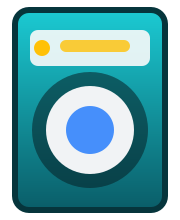

Sık Karşılaşılan Sorunlar
- Sıkma yapmama veya dengesiz sıkma
- Su almama ya da sürekli su alma
- Tambur dönmeme ve yüksek gürültü
- Detaylı hata kodu uyarıları

Dengeli tambur, güçlü motor ve sessiz çalışma için çamaşır makinenizi uzman teknisyenlerimize emanet edin.
Pompa filtresi temizliği, kazan desülfat işlemleri ve amortisör kontrolleri ile cihazınızın ömrünü uzatıyoruz.
Kullanıcıların sık karşılaştığı hata kodlarını ve çözüm yöntemlerini paylaşıyoruz.
Olası Sebepler: Su giriş filtresi, vana, elektronik kart.
Çözüm: Su giriş hattını kontrol edin, problem devam ederse teknisyen çağırın.
Olası Sebepler: Drenaj pompası tıkanıklığı, motor arızası.
Çözüm: Filtreyi temizleyin, sorun sürerse servis yönlendirmemizi isteyin.
Olası Sebepler: Motor kömürleri, tahrik kayışı, kart arızası.
Çözüm: Cihazı kapatıp yeniden başlatın, müdahaleyi uzman teknisyenimize bırakın.
Adana'nın her ilçesinde hazır bulunan ekiplerimiz hızlı çözüm sunar.
Tambur rulmanları, motor ve elektronik kart ölçümleri yaparak sorunu tespit ediyoruz.
Arızalı parçalar onarıldıktan sonra test programı çalıştırıp cihazı teslim ediyoruz.
Google politikalarına uygun şeffaf bilgilendirme ve imzalı servis formu sunuyoruz.